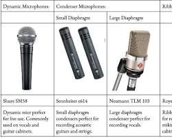
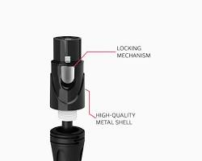
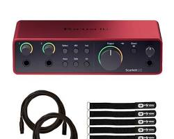
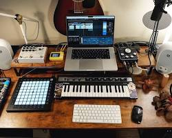

-
What is Audio Engineering?
-
How to Get Started
To get started in audio engineering from scratch, you need to understand the Signal Chain—the path sound takes from the air into your ears.
1. The Physics (The Ingredients)
Before buying gear, understand what you are manipulating:
- Frequency: The pitch of the sound (bass vs. treble).
- Amplitude: The volume or strength of the wave.
- Phase: How waves align. If two waves are "out of phase," they can cancel each other out, making the audio sound thin or silent.
2. The Core Hardware (The Gear)
You need a "Signal Chain" that consists of these five items:
- The Microphone: Converts physical sound into electricity. Beginners should start with a Dynamic mic (durable, ignores background noise) or a Large Diaphragm Condenser (detailed, better for quiet rooms).

- XLR Cable: The standard "balanced" cable used to carry audio signals without adding static or hum.

- Audio Interface: The most critical bridge. It takes the electricity from the mic and converts it into digital data (1s and 0s) for your computer.

- Computer: Your workstation. It needs enough RAM (16GB recommended) to run audio software and effects without lagging.

- Studio Headphones/Monitors: You need "flat response" gear. Consumer headphones (like Beats) "lie" to you by boosting bass. Studio gear tells you the truth so you can make accurate fixes.
3. The Software (The DAW)
The Digital Audio Workstation (DAW) is your digital recording studio.
- Options: GarageBand (Free/Mac), Reaper (Affordable/Pro), or Ableton Live (Great for electronic music).
- The Workflow: You will record audio into "tracks," then move to Mixing, where you balance those tracks together.
4. The "Big Three" Tools
Engineering is 90% mastering these three things:
- Levels (Volume): The simplest but most important step. Balancing the loudness of different instruments.
- EQ (Equalization): Like a surgical volume knob for specific frequencies. You use this to remove "muddiness" from a vocal or "thinness" from a guitar.
- Compression: An automatic volume controller. It turns down the loudest peaks so the quietest parts can be heard, making the audio sound consistent and "expensive."
5. The Environment (Acoustic Treatment)
A $5,000 microphone will sound terrible in a room with echoes.
- Absorption: Use soft materials (blankets, rugs, foam) to stop sound from bouncing off hard walls.
- The "Closet Hack": Recording in a space surrounded by clothes is the best way for a beginner to get a professional, "dry" sound for free.
-
Famous Audio Engineers | Years of Experience